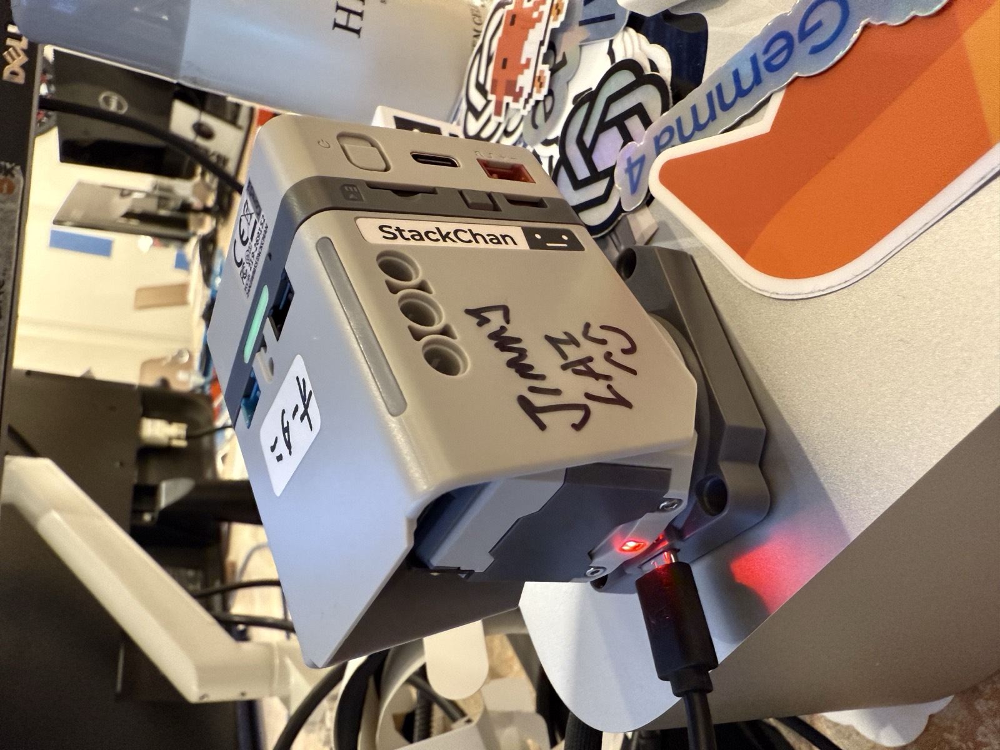
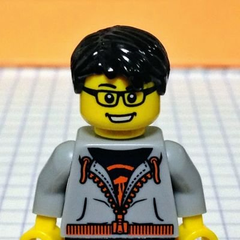
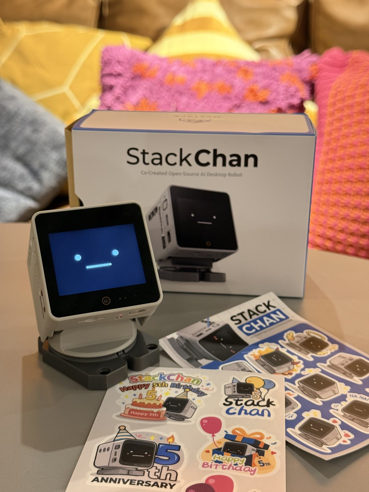
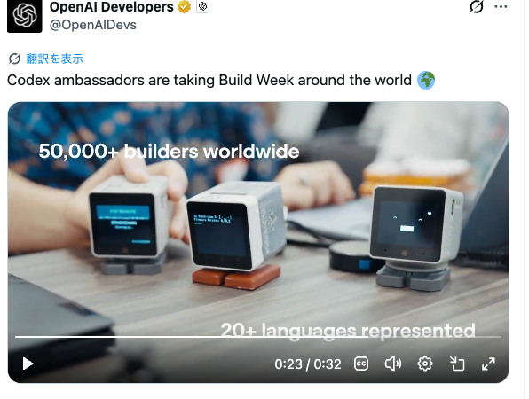
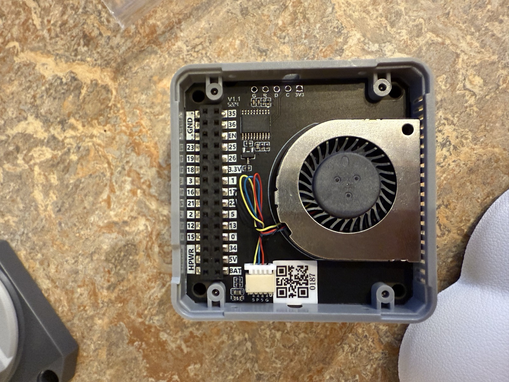
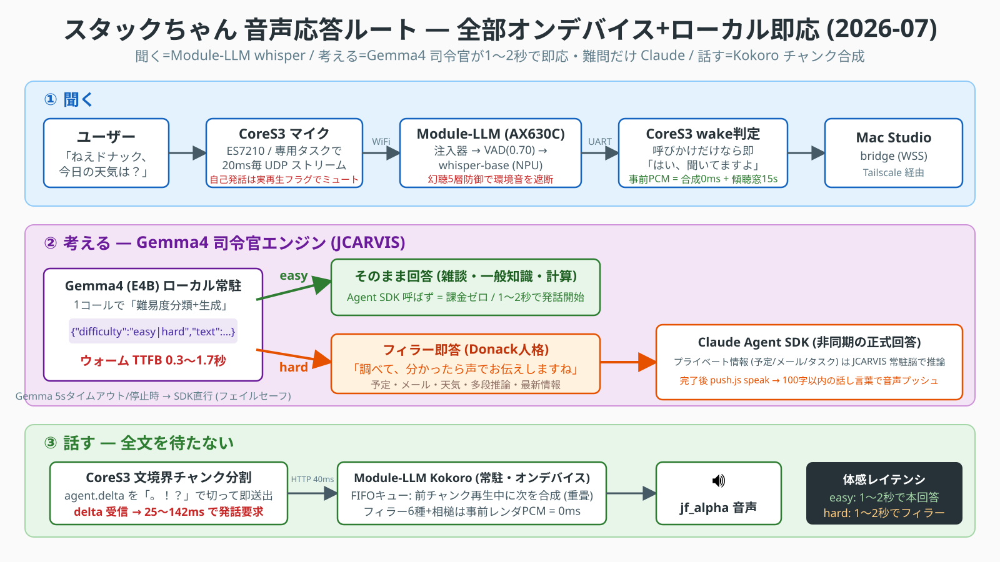

AI Dev Day 2026 ｜ Lightning Talk
スタックチャンと
ローカルLLM
〜 5年の歴史・エッジデバイスの限界・フルローカルLLMの世界 〜
大谷剛弘（@otani_ai_memo）/（株）SYNJAPAN
A-Uta（@UtaAoya） / ローカルAIロボットクリエイター

① HISTORY
スタックチャンの歴史
OSSから始まるコミュニティ
カワイイ、OSSのロボット
- M5Stack ベースの手乗りサイズの卓上ロボット
- 首を振り・表情を出し・しゃべる
- 2021年 ししかわさん(@meganetaaan)

が公開
- オープンソース→ 世界中が改造・着せ替え・AI化
- 2026年7月2日で 5歳のお誕生日 🎂

公式スタックチャン(K151)と5周年記念ステッカー。画面に"顔"が出る。
なぜこんなに愛されるのか
💴 安い・作れる・改造できる
OSS＋M5Stackで、個人が手を出せる。
😊 "顔"がある
道具ではなく"存在"として愛着がわく。
🎉 コミュニティ文化
お誕生日会・着せ替え・撮影ブース。
🌏 世界に広がる
無数のフォークと作例が生まれ続ける。
※ このブースの着せ替え＆撮影も、コミュニティ文化から生まれています
2026-06-24 ｜ #ｽﾀｯｸﾁｬﾝお誕生日2026
6/24、一足早い5歳のお誕生日会 🎂
毎年行われている誕生日会では、日本中から"わが子"を連れたビルダーが集結。
今年から公式版(K151)を販売するM5Stack・Jimmy社長も中国から駆けつけてくれました。
PLAIPIN FRAMEWORK: DEMO（提供：@livinoffwater）

OpenAI Developers 公式X（@OpenAIDevs）2026年7月
OpenAIの公式CMにも登場！世界に羽ばたくスタックチャン 🌏
Codex ambassadors の Build Week 世界ツアー動画に登場——しかもサムネイルがスタックチャン！
50,000+ builders / 20+ languages の映像の"顔"に選ばれました。
カワイイ置物 → 会話する"相棒"へ
2021
誕生。サーボ2個で首振り・M5Stackの"顔"
2022–23
コミュニティ拡大。ChatGPT連携で"しゃべる"化
2024–25
LLM高性能化。音声対話が実用域に／Module-LLM（オンデバイスLLM）登場
2026
M5公式版 スタックチャン(K151) 発売。ローカルLLMで動かす作例が続々
首ふりロボットだったｽﾀｯｸﾁｬﾝがAIにより知性を持ち、ローカルで動かす動きが活発になってきました
なぜ"物理"にこだわるのか
画面の中だけ
ヒトは"話してる相手"が見えないと
不快感を覚える。
顔・声・体を持つと
呼べば振り向く。そこに"居る"＝相棒。
育てた記憶・性格が物理世界に立つ。
AIエージェントを"育てた先"に見える、フィジカルな世界観
② MODULE-LLM ｜ 大谷
Module-LLMの苦労話 🛠️
オンデバイスAI、動けば速い。動かすまでが……

CoreS3＋Module-LLM の配線（自作機）
Module-LLM とは
- M5Stackに重ねるだけの NPU搭載AIモジュール（AX630C）
- LLM・音声認識(ASR)・音声合成(TTS)をネット無しで実行
- つまり：クラウドに頼らないスタックチャンが作れる…はず
期待：「これで最強のオンデバイス相棒が作れる！」
現実：そう甘くはなかった
苦労① 専用ケーブルが、国内で売っていない 🔌
- Module-LLMとサーボ本体（首振りの"体"）を繋ぐための2.5mmプラグケーブル
- 無くても動くには動く。でも体と繋ぐなら欲しい——のに国内でほぼ流通しておらず入手大苦戦
オンデバイスAIの最初の壁は、
AIではなくケーブルだった。
📦 朗報：M5Stackの2026年6月以降の出荷分からは標準で付属に！
→ これから始める人は、もうこの苦労をしなくていい
最新出荷分の公式スタックチャン（K151）にはケーブルが同梱
苦労② MeloTTSでは喋れない → Kokoroを鍛えて突破 🗣️
- 最初に選定した MeloTTS：日本語をNPUでまともに動かせず、実用にならなかった
- Kokoro TTS に刷新——それでも罠だらけ：漢字が読めず12〜22秒の破綻音声・segfault・依存地獄
- misaki G2P＋pykakasi漢字前処理などチューニングを積み上げ、NPUで実用速度を達成
常駐サーバ化で発話要求の応答 40〜60ms。やっと自然な日本語で喋れるように 🎉
工夫① "フィラー発言"で沈黙を消す
- 人は 2秒黙られると「壊れた?」と感じる——AIの推論待ちは致命傷
- フィラー6種＋相槌を事前レンダリング済みPCMでキャッシュ → 合成0msで即再生
- 呼びかけには即「はい、聞いてますよ」、考え中は「調べて、分かったら声でお伝えしますね」
沈黙が消えるだけで、
会話の体感は一変する。
工夫② フロントを Gemma4司令官 に → 爆速化 ⚡
→
Gemma4（ローカル常駐）
1コールで難易度分類＋回答生成
TTFB 0.3秒
→
easy → そのまま発話
1〜2秒・クラウド課金ゼロ
- hard（予定・メール・多段推論）だけ、フィラーでつないで Claude Agent SDK が別系統で深く推論 → 完了したら音声プッシュ
母艦連携を、ざっくり絵にすると
→
🖥️
② Mac Studio（母艦）で判断
Gemma4司令官がまず考える
😊 かんたん
そのまま即答
🤔 むずかしい
🧠 深い推論へバトン
→
母艦連携 — 2026-07 実機構成（最新の全体図）

NEXT CHALLENGE
この知見で、自社製コミュニケーションロボットへ 🤖
- AIEO PROJECT：家族と暮らす卓上コミュニケーションロボットを自社制作したい
- 🌱 最初は「あ・い・え・お」しか言えない子が、拡張パーツで成長して「あいうえお！」と言える日を目指す
- 🧠 スタックチャンで積んだ音声パイプライン × ローカル+クラウド連携のナレッジが土台に
構想を公開中 → aieo-robot.pages.dev
QRからどうぞ（仲間・ツッコミ募集中！）
ここで、疑問
クラウドの力を借りずに、
"全部ローカル" でどこまで会話できるのか？
その問いに真正面から向き合い、展示会で実機を動かした人が、今日ここにいます。
A-Uta さん（@UtaAoya） — CPU・NPU・GPUを総動員したローカルLLMスタックチャンの実践者
ここからが本日のメインです。バトンタッチ！ 🎤
③ LOCAL LLM ★MAIN ｜ A-Uta さん
ローカルLLM実装の最前線
AI ｽﾀｯｸﾁｬﾝ ミニマル — クラウド無しで、会話する
まとめ：AIの"体"は、選べる時代へ
🏠×☁️ ローカル司令官＋クラウド（大谷）
フロントはローカルGemma4で1〜2秒即応。深い推論だけクラウドに任せ、フィラーで沈黙を消す。
🏠 フルローカル（A-Uta さん）
CPU/NPU/GPU総動員で、ネット無しでも会話が成立。
- 🧸 スタックチャン5年：カワイイ置物 → 会話する相棒へ
- 🛠️ オンデバイスAIは苦労も多いが、確実に前進している
- 🌟 育てたAIが、手元のマシンで、物理世界に立つ——もう夢じゃない
1F コミュニティショーケース ｜ 手回し観覧車 & 撮影ブース & フォトウォール
ブースに遊びに来てください 🎉
手持ちのスタックチャンで撮影して、#スタックチャン写真館 #AIDevDay でXにポスト
→ 会場サイネージに自動反映！